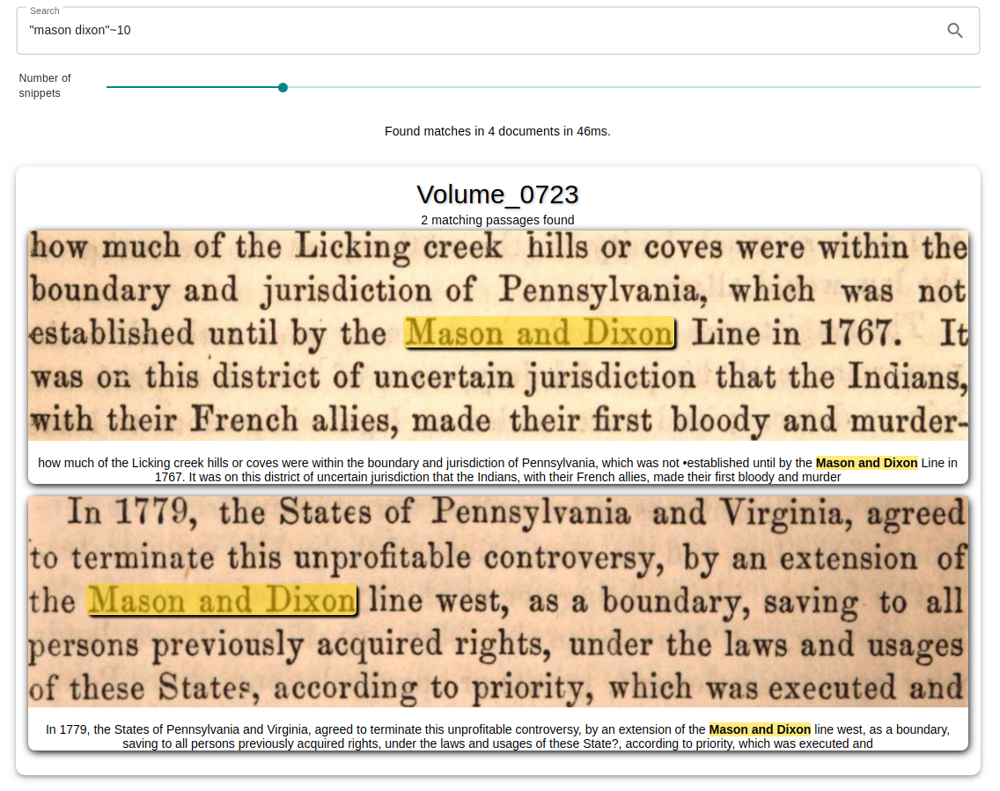
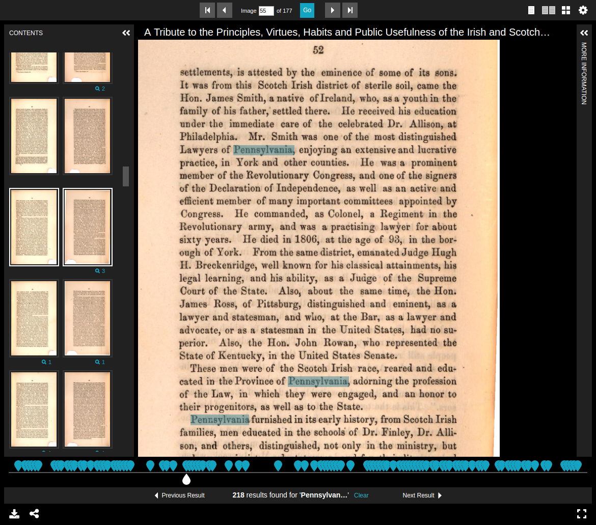

The repository includes a full-fledged example setup based on the Google Books 1000 Dataset. It consists of 1000 Volumes along with their OCRed text in the hOCR format and all book pages as full resolution JPEG images. The example ships with a search interface that allows querying the OCRed texts and displays the matching passages as highlighted image and text snippets. Also included is a small IIIF-Viewer that allows viewing the complete volumes and searching for text within them.
Online version
A public instance of this example is available at https://ocrhl.jbaiter.de.
The Solr server can be queried at https://ocrhl.jbaiter.de/solr, e.g.
q="mason dixon"~10"
Prerequisites
To run the example setup yourself, you will need:
- Docker and
docker-compose - Python 3
- ~8GiB of free storage
Running the example
cd exampledocker-compose up -d./ingest_google100.py- Access
http://localhost:8181in your browser
Search Frontend

IIIF Content Search

Solr Configuration Walkthrough
<!-- The Google 1000 books corpus used for the example is in the hOCR format -->
<searchComponent class="org.mdz.search.solrocr.solr.HighlightComponent" name="ocrHighlight"
ocrFormat="org.mdz.search.solrocr.formats.hocr.HocrFormat">
<!-- We have a single field that contains OCR -->
<lst name="ocrFields">
<str>ocr_text</str>
</lst>
<!-- The example setup loads the ASCII-encoded OCR documents from local storage -->
<fieldLoader class="org.mdz.search.solrocr.lucene.fieldloader.PathFieldLoader" encoding="ascii">
<lst name="externalFields">
<!-- E.g. /google1000/Volume_0000.hocr -->
<str name="ocr_text">/google1000/{id}.hocr</str>
</lst>
</fieldLoader>
</searchComponent>
<fieldtype name="text_ocr" class="solr.TextField" storeOffsetsWithPositions="true" termVectors="true">
<analyzer>
<charFilter class="solr.HTMLStripCharFilterFactory" />
<tokenizer class="solr.StandardTokenizerFactory"/>
<filter class="solr.LowerCaseFilterFactory"/>
<filter class="solr.StopFilterFactory"/>
<filter class="solr.PorterStemFilterFactory"/>
</analyzer>
</fieldtype>